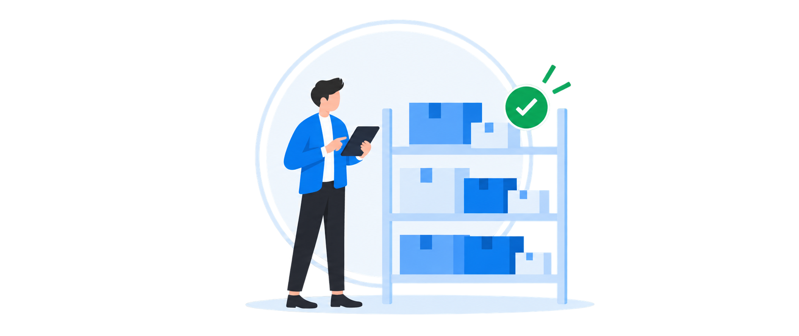

Vergi uçotu
Vergi uçotunu fəaliyyət sahənizə və vergi qanunvericiliyinin tələblərinə uyğun qururuq. Müqavilələri, təhvil-qəbul aktlarını, elektron qaimələri və digər ilkin sənədləri sistemləşdirir, alış-satış və bank əməliyyatlarının uçotda düzgün qeydə alınmasına dəstək göstəririk.
Ticarətdə mal qalığı və hesablaşmaları, istehsalda material sərfi, maya dəyəri və hazır məhsulun uçotunu, xidmət sahəsində isə görülən işlər və ödənişləri izləyirik. İnventarizasiya nəticələrinin və əsas vəsaitlərin uçotda əks olunmasına nəzarətdə saxlayırıq. ƏDV ödəyiciləri üçün ƏDV hesablamaları və bəyannamələrinin hazırlanmasını da həyata keçiririk.
Vergi təqvimini izləyir, bəyannamələrin hazırlanmasına və vaxtında təqdim edilməsinə dəstək oluruq. Elektron kabinetdəki bildiriş və yazışmaları nəzərdən keçirir, vergi orqanlarının sorğularına cavabların hazırlanmasına kömək edirik. Müştəriyə hansı vergi öhdəliklərinin yarandığını, nə qədər ödənilməli olduğunu və qarşıdakı hesabat tarixlərini şəffaf şəkildə təqdim edirik.